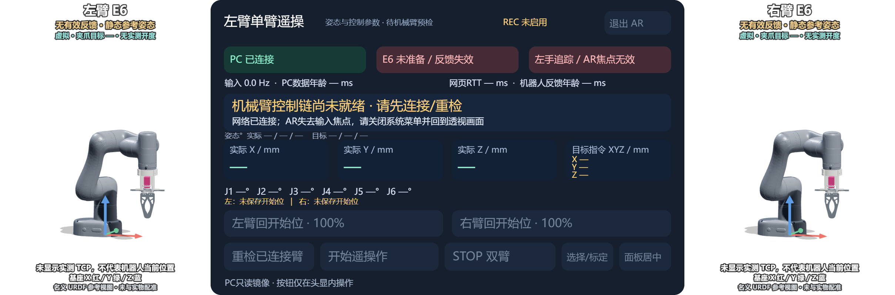
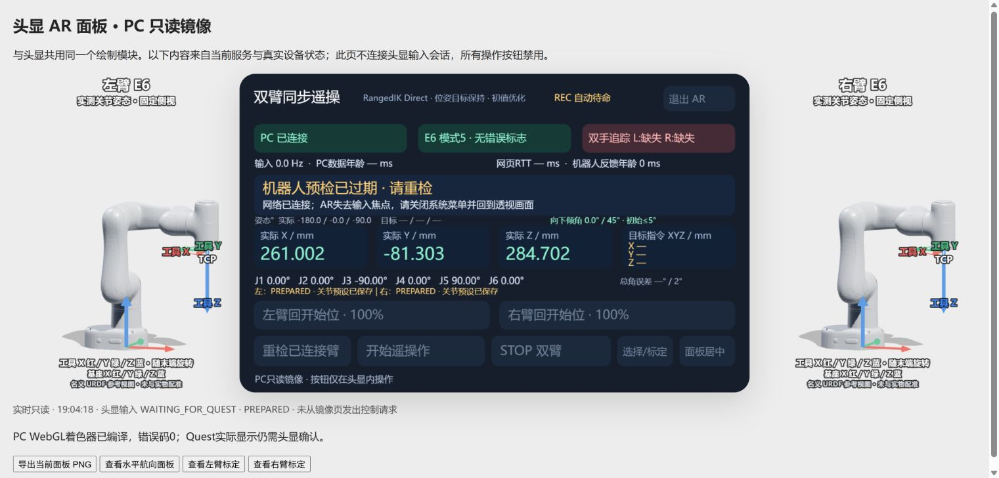
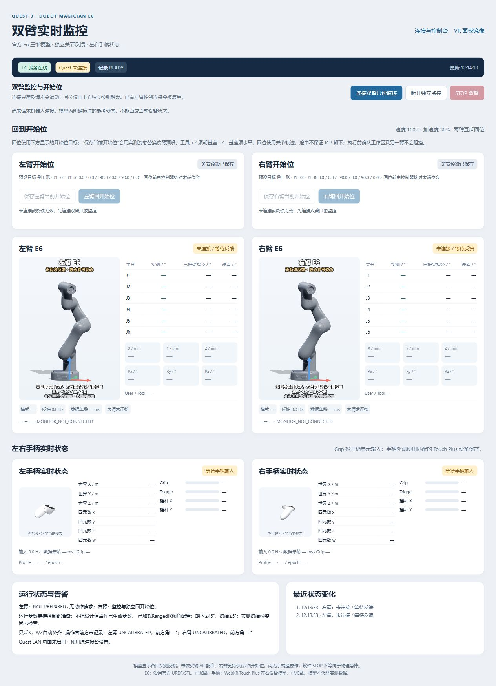
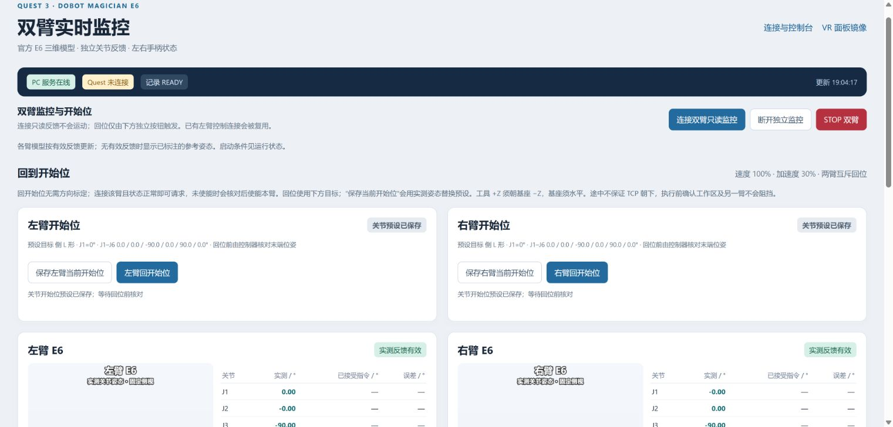
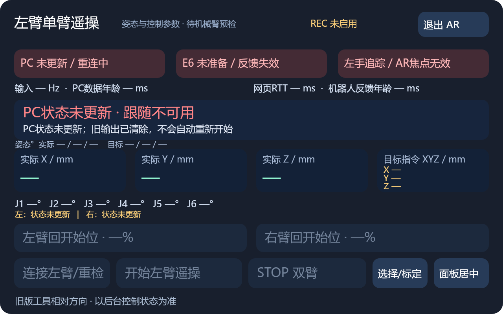
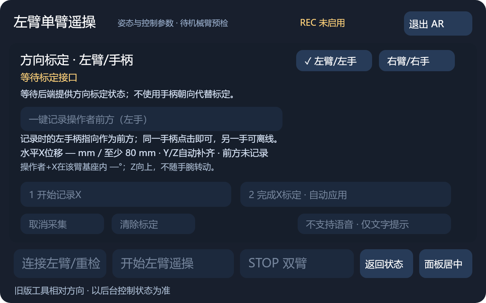
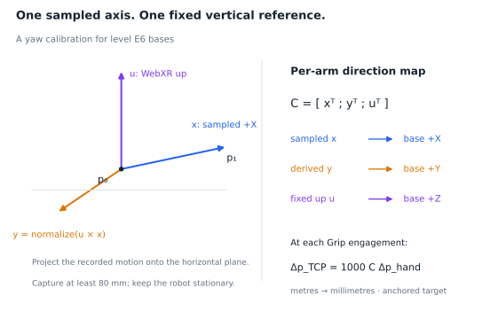

Figure 1. 17 Nov hardware topology. Blue links carry data; dashed gray lines show power relationships; red paths identify independent hardware emergency stops. Device symbols and pose are illustrative, not a terminal wiring or safety certification drawing.Figure 2. Data flow and online control. The verified v7 path sends validated RangedIK candidates directly. DLS is used by the legacy IK path and a separate offline hybrid study; these records do not demonstrate a deployed RangedIK-to-DLS cascade.
Measured performance
Descriptive comparison of recorded left-arm sessions, grouped by the executed algorithm. The experiments used different motions and target policies; this is not a matched-trajectory benchmark. The third column is the verified RangedIK v7 system, not an unverified hybrid controller.
IK · no QPIK + QPRangedIK v7 direct
Metric
IK (no QP)Recorded left-arm data
IK + QPRecorded left-arm data
RangedIK v7 directRecorded left-arm data
Log dates
2026-11-04
2026-11-04
2026-11-17
Arm records / records with tracking
7 / 4
12 / 11
17 / 14
Eligible closed-Grip duration (s)
12.83
67.61
276.74
Processed-goal position RMSE / P95 (mm)
8.09 / 16.33
16.58 / 33.15
12.67 / 24.94
Accepted-reference position RMSE / P95 (mm)
8.07 / 16.33
4.58 / 8.93
10.95 / 21.65
Processed-goal orientation P95 (deg)
6.08
11.38
3.11
Accepted-reference orientation P95 (deg)
6.08
2.69
2.86
Measured TCP speed P50 / P95 (mm/s)
34.82 / 181.13
26.19 / 67.82
44.19 / 157.08
Joint-command step P95 / max (deg)
7.54 / 11.75
3.53 / 3.93
7.44 / 37.36
Non-normal STOP events (all Arm records)
7
12
16
Recorded queue drops
0
0
0
In these selected left-arm records, v7 has lower processed-goal position RMSE and higher median TCP speed than IK + QP. QP nevertheless has smaller accepted-reference error and substantially smaller command steps; the v7 maximum step remains visible in the figure. These are observational trade-offs, not proof of overall superiority or of a deployed hybrid DLS advantage.
“Processed goal” is the recorded controller target before the final reference filter; it is not a reconstruction of the raw hand's complete intent. “Accepted reference” is an acknowledged command target. Speed is estimated from measured TCP samples. Command step size is a continuity proxy, not measured mechanical vibration. P95 denotes the 95th percentile; maxima are retained.
From first motion to an integrated VR workflow. Dates were supplied by the author. Exact video-to-log alignment is not established; the metric table is grouped by recorded software configuration.
Click Play on a video to watch here. Use the progress bar or fullscreen control; a WebM alternative is available if your browser cannot play MP4.
04 · Bimanual VR workflow17 Nov 2026 · 78.3 s · original recording05 · Controller interaction and feedback17 Nov 2026 · 47.0 s · original recording
01 · First robot motion4 Nov 2026 · 35.9 s02 · Following experiments11 Nov 2026 · 15.0 s03 · Motion-control iteration11 Nov 2026 · 25.3 s
PC & VR interface
A headset-first workspace for one operator: the left E6 view, central control panel and right E6 view stay together. After host setup, connection rechecks, calibration, Grip control and guarded return-to-start are available without repeatedly removing the headset.

v0.2.0 · Dual grippers in the headset workspace. Actual read-only HUD export with offline reference arm postures. Analog Trigger sets each gripper's target opening. The left and right Uno boards are optional physical outputs. Gripper design & setup · Changelog17 Nov hardware feedback capture

Left E6 · shared controls · right E6. Actual SDK UI mirror captured on 17 Nov 2026, using the same drawing module as the headset. Both models are labelled measured joint poses. The captured session is waiting for Quest input and requires a recheck; this is a historical interface view, not a live robot connection.
Connect / recheckCalibrateGrip to followStop / returnRecheck & resume
The side views update from each arm's feedback and expose joint/TCP state alongside the control status. A return request first stops following and confirms stationary feedback, handles eligible collision protection, then checks and executes the saved start target. Arrival is confirmed from measurements. Headset operation and recovery →
Explore PC controls and VR panel details
PC console
RECORDED INTERFACE

Independent joint and TCP monitoring
Inspect the model, joint readouts, accepted command and measured TCP pose for each arm. The right arm uses the same independently monitored layout.

Connection and supervision
Check headset and robot feedback status, reconnect the links and request a shared software Stop. Hardware emergency stops remain independent.
Per-arm start positions
Save a measured start pose and request a guarded return for either arm. Preparation and recovery states remain visible.
Quest 3 panel
ACTUAL UI SOURCE

Operate within the headset
Recheck connections, prepare the selected arm, return to its start pose, enter Grip-controlled teleoperation and stop through a shared control panel.

Capture X; complete the frame automatically
Select an arm, record the start point, move along its base +X and finish. A separate action records the operator's forward direction.
PC: selected historical screenshot regions, with original state labels retained. VR detail panels: current source-rendered canvases, disconnected with no supplied telemetry. No headset-video screenshots are used. Design and artwork provenance →
Teleoperation frame calibration
Measure one direction for each arm, then use fixed WebXR up to construct the remaining orthogonal axes. The resulting map makes hand displacement consistent with that E6 base frame.

Connect, recheck and release Grip. Keep tracking and robot feedback valid; complete any start return before capture.
Select an arm and begin X capture. Translate its controller at least 80 mm horizontally along that robot's physical base +X.
Finish X capture. Y and Z are completed and applied automatically. Repeat independently for the other arm.
Record operator forward. Point a tracked controller forward and capture its horizontal ray direction.
Arm, then re-engage Grip. Fresh hand/TCP anchors define relative motion. Check all movement directions with small displacements.
Why one sampled axis works — and what it does not estimate
A single X vector cannot uniquely determine a 3D frame. Here the second constraint is explicit: WebXR up maps to base +Z, so robot bases must be level. Only yaw is fitted. This does not estimate base tilt or XR-to-robot translation.
u = [0, 1, 0]ᵀ d = p₁ − p₀
x = normalize(d − u(uᵀd)) y = normalize(u × x)
x = y × u C = [xᵀ; yᵀ; uᵀ]
p*_TCP = p_TCP,0 + 1000 C(p_hand − p_hand,0)
R*_TCP = C(R_hand R_hand,0ᵀ)CᵀR_TCP,0
The axes are rows of C. Relative orientation removes the need to match the initial controller and TCP orientations. This defines a target; IK, limits, orientation constraints and feedback still determine the actual motion.
We thank the RangedIK authors and open-source contributors, and the researchers behind damped least-squares inverse kinematics (DLS), for the foundations used in this project's development.
Y. Wang, P. Praveena, D. Rakita, and M. Gleicher, “RangedIK: An Optimization-based Robot Motion Generation Method for Ranged-Goal Tasks,” in Proc. 2023 IEEE International Conference on Robotics and Automation (ICRA), London, United Kingdom, 2023, pp. 9700–9706, doi: 10.1109/ICRA48891.2023.10161311.
C. W. Wampler II, “Manipulator Inverse Kinematic Solutions Based on Vector Formulations and Damped Least-Squares Methods,” IEEE Transactions on Systems, Man, and Cybernetics, vol. SMC-16, no. 1, pp. 93–101, Jan. 1986, doi: 10.1109/TSMC.1986.289285.
Y. Nakamura and H. Hanafusa, “Inverse Kinematic Solutions With Singularity Robustness for Robot Manipulator Control,” Journal of Dynamic Systems, Measurement, and Control, vol. 108, no. 3, pp. 163–171, Sep. 1986, doi: 10.1115/1.3143764.
References and attribution · BibTeX · DLS is the standard abbreviation; a deployed RangedIK-to-DLS cascade is not established by the recorded hardware logs.